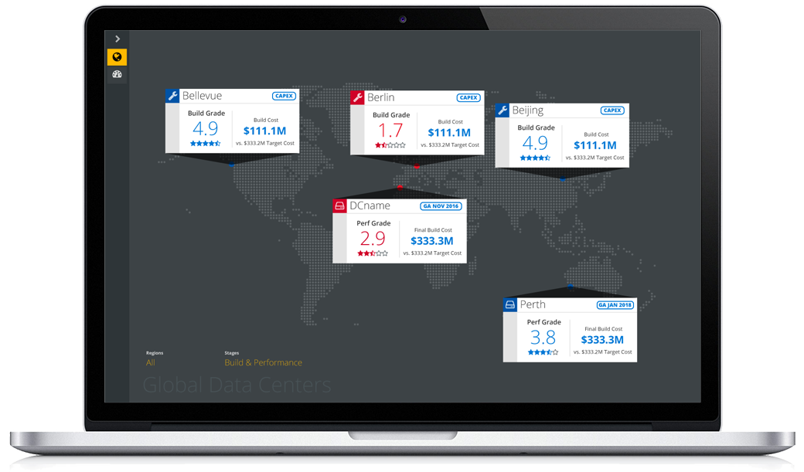

SELECTED WORK



LIVE WEB APP
Data Center Dashboard
MICROSOFT (Contract)
Data center construction and performance metric dashboard. Replaced a manually managed 40+ page slide deck with a dynamic webapp. I am most proud of the grading system algorithm I designed which summarizes data center health into a single score.
My Roles
- UX Designer: responsible for all product experience, from overall information architecture to pixel-level UI.
- Web Dev: wrote all production CSS, using SASS. Partnered with my App Dev to deliver app to production.
- Client Management: primary point of contact for the client. Lead weekly design, product, and project reviews.
UX Process
WORKFLOW DESIGN
PAPER PROTOTYPE
DIGITAL MODEL
VISUAL DESIGN
PRODUCT DEV
/ / / / / / / / / / / / / / / / / / / / / / / / / / / / / / / / / / / / / / / / / / / / / / / / / / / / / / / / / / / / / / / / / / / / / / / / / / / / / / / / / / / / / / / / / /
LIVE WEB APP
Infinity™ (Now an Oracle product)
WEBTRENDS
A multi-year project where I lead a full-stack dev team to design, dev, test, and deliver a unified UX for Webtrends called Infinity. I was Application Dev Manager, responsible for all UX design, App dev, and client-facing API dev.
The project unified seven disparate products into a unified UX. The visual design I created for Webtrends Optimize (below) was the model for the final unified design language.
I also led the team in a major methodological transition from Waterfall to Agile. Infinity was acquired by Oracle in December 2016.
My Roles
- Dev Manager: responsible for all product experience, each pixel and service crossed my desk.
- UX Lead: I worked closely with the Product group during inception to define our product. As a UX manager, I had three UX designers on my dev team. I lead them, along with the app devs to unify the UX using a component-based architecture, reuse and reduction of delta was my major UX focus.
- Individual Contributor: I am a strong believer in service leadership. I contributed to all levels of design and development to ensure my team was successful.
UX Process
INFORMATION ARCHITECTURE
VISUAL DESIGN
INTERACTION DESIGN
PRODUCT DEV
/ / / / / / / / / / / / / / / / / / / / / / / / / / / / / / / / / / / / / / / / / / / / / / / / / / / / / / / / / / / / / / / / / / / / / / / / / / / / / / / / / / / / / / / / / /

LIVE WEB APP
Optimize Visual Editor
WEBTRENDS
Designed an on-page content testing tool to allow non-technical marketers to produce A/B/N tests without need of a web developer or coding experience. Optimize Visual Editor was the final generation of the product I designed at the start-up Widemile which was acquired by Webtrends in 2009.
My Roles
- UX Designer, Lead: Designed all aspects of the product from information architecture to pixel. This product began life in Flash, moved to HTML4, and then HTML5 which finally allowed the on-page experience I had originally envisioned five years earlier.
UX Process
PRODUCT INCEPTION
WORKFLOW DESIGN
PROTOTYPING
VISUAL DESIGN
PRODUCT DEV
/ / / / / / / / / / / / / / / / / / / / / / / / / / / / / / / / / / / / / / / / / / / / / / / / / / / / / / / / / / / / / / / / / / / / / / / / / / / / / / / / / / / / / / / / / /


LIVE WEB APP
Software Lifecycle Tool
MICROSOFT (Contract)
Designed a product to surface the cost and risk involved with software product support expiration. At Microsoft, products reach end-of-life after ten years. In many cases, tens of millions of users depend on dead software which carries a high cost to Microsoft and to their customers.
The primary design challenge was to provide clear visibility into upcoming end-of-support events. Primary users were internal, upper-level product managers and market-facing account reps. The tool informed those users of upcoming risks, allowing clear planning and communication.
My Roles
- UX Designer: responsible for all product experience, from overall information architecture to pixel-level UI.
- Web Dev: wrote all production CSS, using SASS. Partnered with my App Dev to deliver app to production.
- Client Management: primary point of contact for the client. Lead weekly design, product, and project reviews.
UX Process
WORKFLOW DESIGN
DIGITAL MODEL
VISUAL DESIGN
PRODUCT DEV
/ / / / / / / / / / / / / / / / / / / / / / / / / / / / / / / / / / / / / / / / / / / / / / / / / / / / / / / / / / / / / / / / / / / / / / / / / / / / / / / / / / / / / / / / / /
LIVE WEB APP
MyBPCS
BLUEPRINT CONSULTING SERVICES
Designed an MVP employee engagement web app experience intended to grow culture and community within a company. The project was nearing a 90-day delivery deadline when I was tasked with rescuing a misguided UX. After redesigning the entire mobile UI inside 24 hours, I then lead the dev team as Scrum Master to complete product dev and deliver on time, in just six days.
My Roles
- UX Designer: I redesigned the entire UX from desktop-only to mobile-first in a very compressed period. I conceded to limit visual design changes, maintaining MVP-level UI, as a method to expediate delivery.
- Dev Team Lead: My years of experience in dev team leadership came to bear as I lead the product team into a six day sprint. We worked over a weekend to revamp the UI and hit the 90-day deadline with a day to spare.
- Project Owner: The company owner came directly to me with the challenge of rescuing the project. I took over most PM duties, including status updates and backlog management. I loved the project challenge as much as I was disappointed not to have more time to develop a true visual language for the product.
- Web Dev: I wrote HTML, CSS, and JavaScript, effectively joining the two other app devs in our day-and-night push to complete implementation of the redesign.
UX Process
PRODUCT DEFINITION
WIREFRAMING
PRODUCT DEV
/ / / / / / / / / / / / / / / / / / / / / / / / / / / / / / / / / / / / / / / / / / / / / / / / / / / / / / / / / / / / / / / / / / / / / / / / / / / / / / / / / / / / / / / / / /